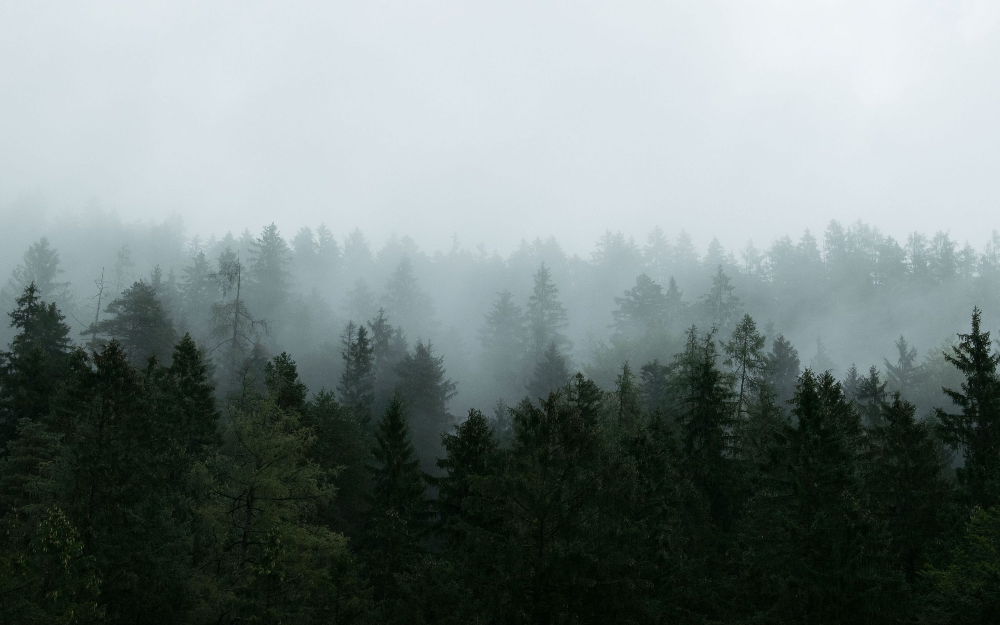

Interfaces and websites, built with quiet precision.
Danylo builds interfaces and websites, from first sketch to shipped code. He works across UI design and front-end development, favouring clean structure over decoration and a considered detail over a quick fix.